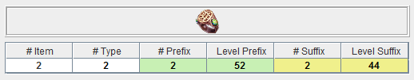

Transfer items from the shared stash to GD Stash
On the right side of the 'Stash Transfer' page, the stash is shown. You can switch between the softcore and hardcore stash.
The 'Reload' button is not needed to switch between the two. It can be used to undo any changes that have not been saved yet
or to reload the stash after it has changed in Grim Dawn however.
After you select an item, its details are shown in the middle of the screen.
Of particular note is the following information, it lists the number of similar items already stored in the GD Stash database.

| # Item | The number of identical items (i.e. the exact same item) stored in the GD Stash database with the same prefix and suffix as the selected item. |
| # Type |
The number of items of the same type (e.g. 1H sword) as the selected item stored in the GD Stash
database with the same prefix and suffix.
For unique items, this is only used if the item has affixes, in that case it is the number of identical items in the database (with any affix combination). |
| # Prefix |
The number of identical items stored in the GD Stash database with the same prefix as the selected item.
The background is light green if the prefix is rare and light yellow if it is magical. |
| Level Prefix | The required level of the item prefix. |
| # Suffix |
The number of identical items stored in the GD Stash database with the same suffix as the selected item.
The background is light green if the suffix is rare and light yellow if it is magical. |
| Level Suffix | The required level of the item suffix. |
By pressing 'Copy item to DB', the item is imported to the GD Stash database. By pressing 'Move item to DB' the item is
imported to the GD Stash database and removed from the shared stash. As the shared stash has changed in the second case,
that change needs to be saved. 'Delete item from stash' removes the selected item from the shared stash without
placing it in the GD Stash database.
'Copy entire page to DB', 'Move entire page to DB' and 'Delete entire page' perform the same operation on all items of
the currently selected shared stash page.
If the stash has changed, it needs to be saved, to apply the changes to the shared stash in Grim Dawn.
Transfer item to shared stash
To transfer an item from the GD Stash database to the shared stash, it has to first be searched in the database.
Depending on the search criteria, a list of items is returned from the GD Stash database. The search automatically
onsiders whether to search for softcore or hardcore items, based on the settings and the stash currently selected
in the Transfer page.
An item is selected by either clicking on any of its columns or by hovering over its image. The latter allows for
a convenient browsing of all returned items.
The stats of the selected item are displayed in the center of the screen. These are the base stats of the item
as stored in the Grim Dawn database.arz, they are not adjusted based on the seed of the item as the logic behind
that is currently unknown.
By clicking on an empty area in the shared stash, the item is added to the stash. To remove the item from the
GD Stash database (and thereby moving it to the transfer stash, rather than copying it), press the button